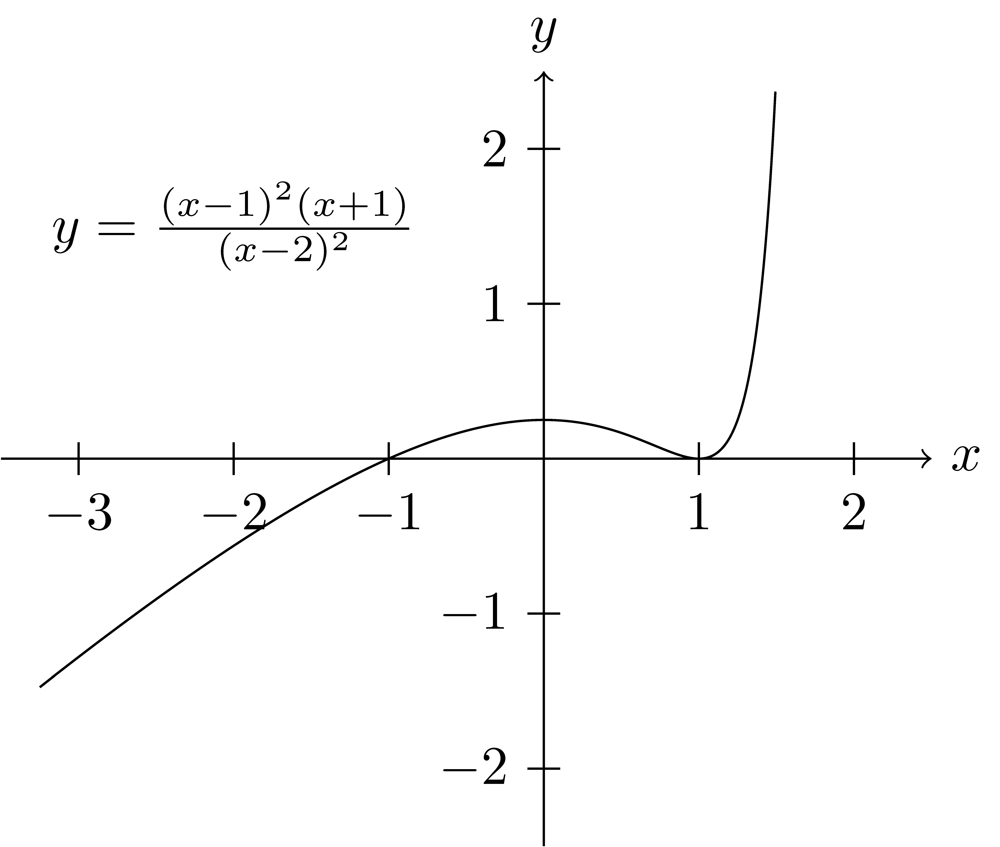
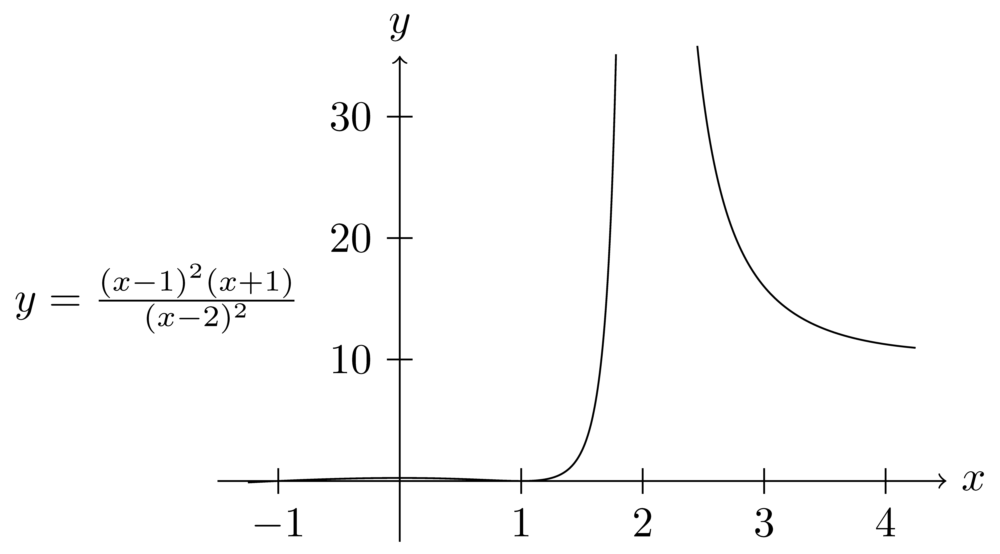

8.7 Rational Functions
A rational function is of the form \[f(x)=\frac{p(x)}{q(x)}\] for some polynomials \(p\) and \(q\) with real-valued coefficients. If the degree of \(q\) is zero, then the rational function is just a polynomial. So we will assume throughout this section that the degree of \(q\) is at least one. In the same way that the different representations of a polynomial help us to understand different aspects of the polynomial, different representations of the rational function will help us to better understand properties of the rational function.
8.7.1 Short-Term Behavior
In order to understand the short-term behavior of a rational function, it is helpful to write the function in its factored form \[f(x)=\frac{p(x)}{q(x)} = A\frac{ (x-a_1)^{j_1} (x-a_2)^{j_2} \cdot (x-a_n)^{j_n}}{(x-b_1)^{k_1} (x-b_2)^{k_2} \cdots (x-b_m)^{k_m}}\] where the \(a_i\in \mathbb{C}\) are the zeros of degree \(j_i\) of the numerator (and thus the zeros of the function), the \(b_i\in \mathbb{C}\) are zeros of the denominator, and \(A\) is a real number that allows the numerator and denominator to both be monic polynomials. Since the polynomials have real-valued coefficients, any factors corresponding to non-real zeros come in conjugate pairs. The \(b_i\) that are real-valued correspond with values that have been removed from the domain of the function. Similarly, the \(a_i\) that are real-valued correspond to the horizontal intercepts for the rational function.
8.7.1.1 Common Factors
When the numerator and denominator share a factor, \((x-a_0)\),we need to understand how this affects the rational function.
If the degree of the shared factor is larger in the numerator than in the denominator, the rational function is undefined at the zero of the factor, but has a limit of zero near this value. We can also see that the rational function is equivalent to the rational function where \((x-a_0)\) is only a factor in the numerator whose degree is the difference between the degrees of the factor in the numerator and denominator of the original rational function, with the zero of the factor removed from the domain of the new function. For example, \[f(x)=\frac{(x-1)^3}{(x-1)^1} \mbox{ is equivalent to } g(x)=(x-1)^2, \: \mbox{ for } x\in \mathbb{R}\setminus\{1\}.\]
If the degree of the shared factor is larger in the denominator than in the numerator, the rational function is equivalent to the rational function where \((x-a_0)\) is only a factor in the denominator whose degree is the difference between the degrees of the factor in the denominator and numerator of the original rational function. For example, \[f(x)=\frac{(x-1)^1}{(x-1)^3} \mbox{ is equivalent to } g(x)=\frac{1}{(x-1)^2}.\]
If the shared factor has the same degree in the numerator and denominator, then this is a removable singularity and the factor can be removed from both the numerator and denominator with the removal of the zero of the factor from the new rational function.
For the remainder of the section we will assume that the numerator and denominator do not have a common factor.
8.7.1.2 Behavior near Zeros
The factors of the numerator of the rational function determine the zeros of the polynomial. If \((x-a_0)\) is a factor of the numerator of degree \(j_0\), and if \(a_0\in \mathbb{R}\), then \(a_0\) is a zero of the rational function (thus \(a_0\) is a horizontal intercept of the graph of the rational function) and we can rewrite the rational function as \[f(x) = (x-a_0)^{j_0} g(x)\] where \(g\) is a rational function without \((x-a_0)\) as a factor of either the numerator or denominator (See Theorem 8.1). Using properties from analysis (similarly to Theorem 8.1) we can determine that near \(x=a_0\) that \[f(x) \approx g(a_0) (x-a_0)^{j_0}.\]
Example 8.1 To better understand this concept let us consider \[f(x)=\frac{(x-1)^2(x+1)}{(x-2)^2}.\] We see that the function has horizontal intercepts at \(-1\) and \(1\). We can also see that near \(x=-1\), the function is very similar to \[g(x)= (x+1) \cdot \frac{ ((-1)-1)^2}{((-1)-2)^2}= \frac{4}{9} (x+1).\] Similarly, near \(x=1\) the function behaves very similarly to \(h(x)= 2(x-1)^2\).

8.7.1.3 Behavior near Singularities
In order to determine the domain of the rational functions we consider the factors of the denominator of the function. If \((x-b_0)\) is a factor in the denominator of the rational function, and \(b_0\in \mathbb{R}\), then \(b_0\) is not in the domain of the function. If the degree of the factor is \(k_0\), then we see that the function can be rewritten as \[f(x)= \frac{1}{(x-b_0)^{k_0}} g(x)\] for a rational function \(g\) with \(b_0\) in the domain of \(g\) and \(g(b_0)\neq 0\). So near \(x=b_0\), \[f(x) \approx g(b_0) \frac{1}{(x-b_0)^{k_0}}.\]
Example 8.2 Returning to our example of \(f(x)=\frac{(x-1)^2(x+1)}{(x-2)^2}\), we can see that near \(x=2\) that \[f(x) \approx \frac{3}{(x-2)^2},\] as evidenced in the following graph.

This understanding of short-term behavior can help us to simplify certain models near given points, choose appropriate window sizes to have technology graph a function, and be able to more easily determine if the graph of a function generated by a program is accurate.
8.7.2 Long-Term Behavior
In order to understand the long-term behavior of rational functions we start by looking at rational functions where the degree of the numerator is less than the degree of the denominator. Such functions can be generalized as \[f(x) = \frac{ a_0 + a_1 x + a_2 x^2 + \cdots + a_n x^n}{b_0 + b_1 x + \cdots + b_n x^n +\cdots +b_{n+r}x^{n+r}}.\] Then by multiplying the numerator and denominator by \(x^{-(n+r)}\) we have \[f(x) = \frac{ a_0\frac{1}{x^{n+r}} + a_1 \frac{1}{x^{n+r-1}} + \cdots + a_n \frac{1}{x^{r}}}{b_0 \frac{1}{x^{n+r}} + b_1 \frac{1}{x^{n+r-1}} + \cdots + b_n \frac{1}{x} +\cdots +b_{n+r}}\] and we can see that as \(|x|\) gets large that most of the terms converge to \(0\). Thus, \[\lim_{x\rightarrow \pm \infty} f(x) = \frac{0}{b_{n+r}} = 0.\]
So we see that if the degree of the numerator is less than the degree of the denominator that the graph of the function approaches the horizontal axis as \(|x|\) gets large. This is often called a horizontal asymptote of the function since the function asymptotically approaches the horizontal axis. A challenge that many students have with this terminology is that they have been told that a function cannot cross an asymptote. While that is true for vertical asymptotes, it is not true for horizontal asymptotes as seen in the graph of the function below.

In fact, a function can cross its “horizontal asymptote” an infinite number of times. For example, \[f(x)=\frac{\cos(x)}{x}.\]

We can then build on this understanding to study the long-term behavior of rational functions with the degree of the numerator greater than or equal to the degree of the denominator. So if \(f(x)\) is a rational function with numerator \(a(x)\) and denominator \(b(x)\) we have from the Division Algorithm for Polynomials 7.10 that there exist unique polynomials \(q(x)\) and \(r(x)\) such that \[a(x)=b(x) q(x) + r(x)\] with the degree of \(r(x)\) less than the degree of \(b(x)\). Dividing both sides of this equation by \(b(x)\) we have \[f(x)=\frac{a(x)}{b(x)} = q(x) + \frac{r(x)}{b(x)}.\]
From the conversation above we can see that \[\lim_{x\rightarrow \pm \infty} \frac{r(x)}{b(x)} =0\] and that \(f(x)\) asymptotically approaches \(q(x)\) as \(|x| \rightarrow \infty\). So if the degree of the numerator is one plus the degree of the denominator then the quotient would be a linear function. Such asymptotes are often called ``skew asymptotes.’’
Example 8.3 Returning to our example of \(f(x)=\frac{(x-1)^2(x+1)}{(x-2)^2}\), we can rewrite the function using the division algorithm as \[f(x)= x+3 + \frac{7x-11}{(x-2)^2}.\]

8.7.3 Partial Fraction Decomposition
Another way to represent rational functions whose numerator has a lower degree than the denominator is a partial fraction decomposition. This decomposition allows the rational function to be written as the sum of rational functions whose denominators are irreducible and whose numerators are of lower degree than the denominator. For instance, \[\frac{3x-1}{x^2-2x-3} = \frac{1}{x+1} + \frac{2}{x-3}\quad \mbox{or} \quad \frac{3x^2-x+1}{x^3+x} = \frac{2x-1}{x^2+1} + \frac{1}{x}.\]
There are limited uses of the partial fraction decomposition in the K-12 curriculum. Hence, it was not included in the Common Core standards. However, this representation of a rational function is essential in the area of integration of rational functions. It is also useful to find Taylor (and Laurent) series expansions, and to solve problems in differential equations involving the Laplace transform. Because of this, we recommend this content first being taught during the section of integration of rational functions in Calculus. In the high school curriculum, this is during the BC portion of an Advanced Placement Calculus AB/BC course.
8.7.4 Exercises
Consider the polynomials \(a(x)=2x^3+3x^2-5x-7\) and \(b(x)=x^2+1\).
- Perform polynomial division of \(a(x)\) by \(b(x)\). Call the quotient polynomial \(q(x)\) and the remainder polynomial \(r(x)\).
- Use the quotient and remainder to describe the behavior of \(f(x)\) when \(|x|\) is large.
Let \(\displaystyle{f(x)=\frac{x^3-1}{x^3+1}}\).
- What is the domain of \(f\)?
- Determine the singular points of \(f\) (that is, the points at which \(f\) is undefined) and whether \(f\) has any vertical asymptotes at these points.
- What is the range of \(f\)?
- At what points does the graph of \(f\) intersect the horizontal-axis?
- Find any global or local maxima or minima.
- Determine the intervals on which \(f\) is increasing and those intervals on which \(f\) is decreasing.
- Describe what happens to \(f(x)\) as \(x\rightarrow \infty\) and as \(x \rightarrow -\infty\).
- What is a power series of \(f\)?
List and describe the behavior near each of the zeros and singularities for the following rational functions.
- \({\displaystyle f(x)=\frac{x+3}{x^2+2x-3} }\)
- \({\displaystyle f(x)=\frac{x^2-2x-24}{x^2+10x+24} }\)
- \({\displaystyle f(x)=\frac{25x^2-80x+64}{192-75x^2} }\)
- \({\displaystyle f(x)=\frac{12x^7-3x^3}{4x^4-16x} }\)
- \({\displaystyle f(x)=\frac{6x-12x^9}{3x^3+7} }\)
- \({\displaystyle f(x)=\frac{x^2+15x+56}{x+5} }\)
- \({\displaystyle f(x)=\frac{x^2+2x-15}{x^2+10x+25} }\)
- \({\displaystyle f(x)=\frac{x^2+8x+16}{x^2+6x+8} }\)
- \({\displaystyle f(x)=\frac{x^5+3x^3+2x^2+4x+1}{x^4+5} }\)
Describe the long-term behavior for the following rational functions.
- \({\displaystyle f(x)=\frac{x+3}{x^2+2x-3} }\)
- \({\displaystyle f(x)=\frac{x^2-2x-24}{x^2+10x+24} }\)
- \({\displaystyle f(x)=\frac{25x^2-80x+64}{192-75x^2} }\)
- \({\displaystyle f(x)=\frac{12x^7-3x^3}{4x^4-16x} }\)
- \({\displaystyle f(x)=\frac{6x-12x^9}{3x^3+7} }\)
- \({\displaystyle f(x)=\frac{x^2+15x+56}{x+5} }\)
- \({\displaystyle f(x)=\frac{x^2+2x-15}{x^2+10x+25} }\)
- \({\displaystyle f(x)=\frac{x^2+8x+16}{x^2+6x+8} }\)
- \({\displaystyle f(x)=\frac{x^5+3x^3+2x^2+4x+1}{x^4+5} }\)
Find an algebraic representation for a function, \(f\), whose graph has all of the following attributes.
- \(f(2)=0\)
- \(f(\frac{1}{2})=0\)
- \(f(-3)=0\)
- \(\displaystyle{\lim_{x \rightarrow \frac{2}{3}^+} f(x) = \infty}\)
- \(\displaystyle{\lim_{x \rightarrow 1^-} f(x) = \infty}\)
- As \(x\rightarrow \pm \infty\), \(\displaystyle{f(x) \approx \frac{10}{3}x^2+\frac{77}{9}x-\frac{242}{27}}\)
Write the rational functions below in their partial fraction decomposition over the real numbers.
- \(\displaystyle{f(x)=\frac{x^3+x^2+1}{x^2-x}}\)
- \(\displaystyle{f(x)=\frac{x^4}{x^4-1}}\)
- \(\displaystyle{f(x)=\frac{4x^2-3x+2}{4x^2-4x+3}}\)
- \(\displaystyle{f(x)=\frac{x^4-2x^2+4x+1}{x^3-x^2-x+1}}\)
- \(\displaystyle{f(x)=\frac{2x^2-x+4}{x^3+4x}}\)